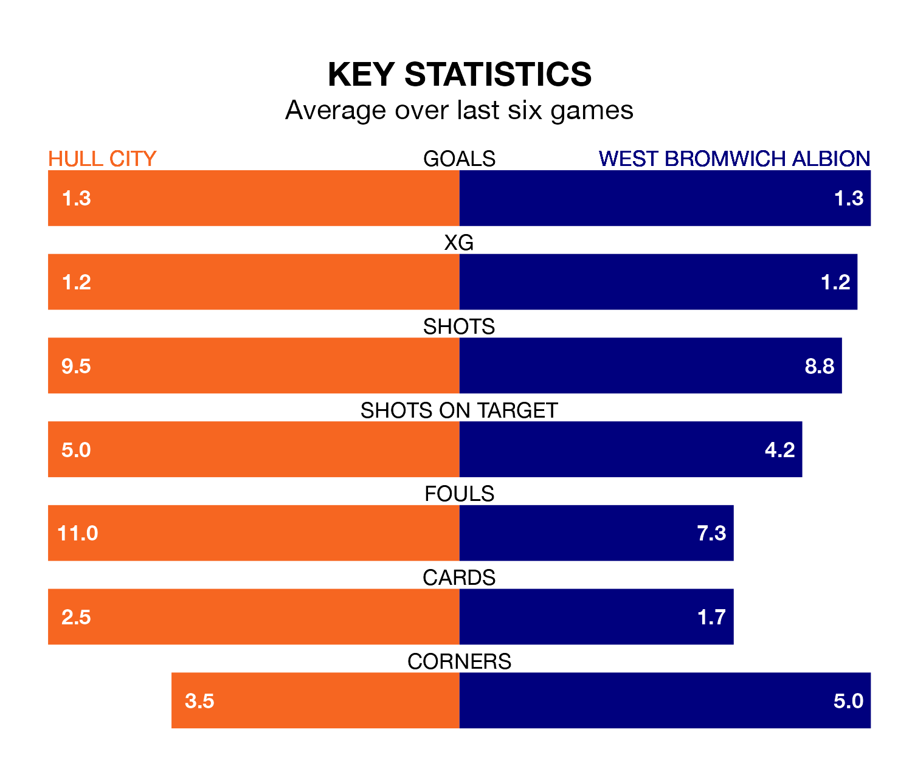

Hull City host West Bromwich Albion at the MKM Stadium on Saturday lunchtime on the back of three consecutive wins in EFL Championship.
Hull have picked up 15 points from their last six games, and they face a Baggies side who also won their last match, and have collected 10 points from the last possible 18.
In Alex Palmer, West Bromwich can rely on one of the league's safest pair of hands. He has kept 15 clean sheets in his 33 appearances this season, and no 'keeper has prevented the opposition scoring more often in EFL Championship.
In Hull's net, Ryan Allsop has seven clean sheets in 24 games. He has conceded a goal every 83 minutes, 30% more often than the 106 minutes between goals for Palmer.
In the last 10 years, Hull and West Bromwich have played each other on 15 occasions. Hull won three of them, West Bromwich 10, and they drew twice.
On average, the Tigers scored 1.1 goals and the Baggies 1.8 in those matches.
Their last meeting was on November 4, when West Bromwich won 3-1 at home.
With 49 goals in 33 games so far this season, City are scoring more than average in the league with 1.5 goals per game. And they are conceding fewer than average, letting in 42 goals at a rate of 1.3 per game.
Albion are also above average scorers, with 1.5 goals per game, compared to a league average of 1.4. They have conceded 0.9 goals per game.
The Baggies are fifth in the table after 33 games, of which they have won 16 and drawn seven, earning 55 points.
The Tigers are one place behind the away team in sixth, with 16 wins and six draws putting them on 54 points.
Hull's last match was on Tuesday, a 2-1 win against Southampton, with Anass Zaroury and Fabio Carvalho getting the goals for the Tigers.
West Bromwich beat Plymouth Argyle 3-0 last time out, also on Tuesday, with Cedric Kipre, Michael Andrew Johnston and Tom Fellows on the scoresheet.
Updated: 10:08 (UTC), 23/02/24